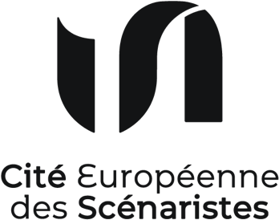

“We are writers. We invent the fictional narrative of societies. Our work is a powerful tool we have to use – even more in these times. We are responsible.”
Caroline Otto,
scénariste allemande
La Cité européenne des scénaristes est une association d’intérêt général dédiée aux scénaristes et aux acteurs du secteur audiovisuel et cinématographique.
Sa raison d’être est de contribuer au renouvellement permanent des récits et des talents, dans toute leur diversité.
Vous avez une idée d’action ou de collaboration ?
Vous voulez participer à l’aventure en tant que bénévole, partenaire ou mécène ? Vous souhaitez apporter votre soutien ? Ou tout simplement être tenu au courant ?
Contactez nous sur
contact@cite-des-scenaristes.org

Partenaires

Mécènes
Soutiens